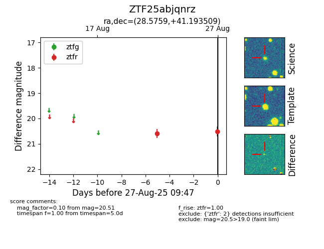

Target ZTF25abjqnrz at 2025-08-27 09:47, see:
FINK: fink-portal.org/ZTF25abjqnrz
Lasair: lasair-ztf.lsst.ac.uk/objects/ZTF25abjqnrz
ALeRCE: alerce.online/object/ZTF25abjqnrz
alt names
ZTF25abjqnrz (ztf,fink)
coordinates:
equatorial (ra, dec) = (28.5759,+41.19351)
galactic (l, b) = (135.4713,-20.14251)
photometry
last ztfr=20.51
2 ztfr detections
